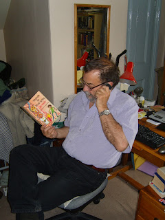

 |
| Jan Needle |
{kind=link}
Now, some of our AE members are a lot more energetic and
knowledgeable about promotion than I am, or ever will be. To name a couple at
random – John A.A.Logan and Julia Jones. Follow them for any length of time,
and you see two people who are working their socks off at far more than the
original grind of writing. They enter competitions, they follow other people’s
blogs, they review, they respond to comments, they make comments themselves.
I don’t know John (although I’d like to – I love his writing)
and I do know Julia. Love her work, too – and she also has a fantastic boat.
What a combination! I don’t know how much of a payoff they get for their terrific energy, even for the prizes and accolades they win, but it will work out to great advantage in the end, I’m certain. They deserve to be read, and read and read.
And get rich, of course…
Which leads me neatly on to me. All my creative energy goes into writing the bloody things. I read the blogs by the energetic crew who promote, and enter things, and write to people, but I haven’t got the nous to emulate them. Or maybe I’m an idle git.
So – how about this for an idea? Last month I told you I was redoing my thriller Kicking Off to make it a bit less raw and stomach-churning. Now I have, and it’s almost ready to go up on Kindle. The original version will be taken down, of course, and the new one will have a flash across the cover declaring NEW EDITION.
But before this happens, I’m putting up a pretty full taster – for FREE (that magic word). People will be able to read and absorb the essence very fast indeed, and will – I hope – want the full monty as soon as they are offered it (for the price of five sevenths of a pint of Joseph Holt’s best bitter!)
Both the digest and the full book will also trail the next one in the series about Rosanna (The Mouse) Nixon and Andrew Forbes – which is called The Bonus Boys, and is ready to go.
I’ll do what I can in the way of promotion, naturally. Which means I’ll mention the whole thing on my Facebook page and Twitter. What more can an idle and confused technophobe do? Starve to death on David Cameron’s doorstep? (He’d notice, obviously…)
It really is a key concern for us virtual authors, I feel. How to get noticed. So, that’s my current plan on the thriller front. Anyone got any other ideas/suggestions?
This is how the start might look. (It's been cleaned up a bit to keep this site a wee bit shock free):
‘A Car
Smash on Speed’ – your FREE short cut to a world of
{kind=link}
violence and corruption
Before it became an ebook, film-maker Roger
Graef (The Police, Closing Ranks, The Secret Policeman’s Ball) said of
this thriller: ‘A compulsive read that feeds your paranoia.’
Convicted murderer Jimmy Boyle (A Sense of Freedom, Pain of Confinement: Prison Diaries) said: ‘I found myself being drawn back into that twilight world again, despite myself. I was grossly entertained and thrilled.’
The Times: ‘Reveals a Britain regressing to the dark days of Dickens.' Guardian: Compelling for its vivid, racy narrative…chilling authenticity.
Convicted murderer Jimmy Boyle (A Sense of Freedom, Pain of Confinement: Prison Diaries) said: ‘I found myself being drawn back into that twilight world again, despite myself. I was grossly entertained and thrilled.’
The Times: ‘Reveals a Britain regressing to the dark days of Dickens.' Guardian: Compelling for its vivid, racy narrative…chilling authenticity.
Apart from all that, though, it’s quite a
simple story. Freelance investigator Andrew Forbes is working with a Customs
agent friend to crack an international drugs scam. Unfortunately the government
– and the CIA – are desperate that they don’t succeed. Forbes, who lives on a
very seedy London street, is under surveillance by two very seedy secret service men…
ONE
'What I can't see,' said Paddy
Collins, 'is what he gets out of life. I mean, for Christ's sake - a Porsche in a street like this, I ask you. And it's never moved, in two
months to my certain knowledge. What's he got it for?'
The fat man did not
reply. They had been in the street
for three hours now. Three hours and seventeen minutes,
to be precise. He eased his buttocks on the driver's seat. He sucked his teeth.
The fat
man and Paddy Collins had a grievance. The target had a Porsche, they had a Corsair.
It was meant to be inconspicuous, but it was old, a ghastly vomit-green, and
quite possibly the only Corsair left running in the south of England, perhaps
the world. As inconspicuous as a sore green thumb, and they were stuck in it.
'I'm bored,' he said.
'News time.'
Paddy Collins turned
the radio on, and they listened in silence for a while. For the third day running
the main news was the jail siege, somewhere north of the Border, somewhere
where the savages ran around in skirts, and that was just the men. According to
the reporter, there was snow on the ground up there. Snow on the ground, and
snow on the roof where sixty-seven prisoners were standing, dressed in overalls
and blankets. Collins shivered.
'Mad,' he said. 'Insane. They ought to
bring back hanging, didn't they, as a human kindness? Or transportation, to a
warmer clime.'
These two men were
bored, but on the prison roof, a young life was just about to end, a strange
event that would bring about their own deaths not much later. But on the night
the protester fell, nobody seemed to notice. He was surrounded by Scots hacks –
hard bitten, hard drinking men. And all oblivious. Only the Mouse took
note…Rosanna Nixon.
TWO
When
Rosanna Nixon finally went into the back room at Eliot's, an ironic cheer arose. She was known to many of the Glasgow crew as
young and inexperienced, with a degree in five eighths of sod all. She was quiet and
a trifle superior, and she had Bleeding Heart written all over her. In her granny coat
and boots, her woollen hat pulled
down so far it almost touched her dripping nose, she did not even look worth
trying to get to bed.
Later, though, when they'd got a few big
ones inside them, they were
friendlier. This involved mocking her unmercifully, but in a jocular way, about
her absurd belief that the Buckie Jail siege mattered,
or that anybody really cared.
'Forget
it, hen, God's sake!' yelled a man called Angus. 'They bastards
up there are just thickarses. The
government'll see them
freeze or starve to death before they lift a
finger. Damn
right too.'
'How is it right?' yelled Rosanna. She had to yell because the bar
was full, and everyone was drinking
whisky in full-throated cry. 'They've
been brutalised! Conditions
in Buckie are appalling!'
Those near enough to
hear her yelped with laughter. There were prison officers in Eliot's now, their shifts at the barricades over. Policemen, too. Many of the journalists were chatting to them, happily,
hoping to pick their brains
for usable quotes and
bankable opinions.
'Tell
that crap to the lads!'
roared Angus. 'Them on the
roof are cavemen! You're wet behind
the ears!'
Sandy Hamilton, slightly younger and less drunk, decided it was time to be nice.
With four
large Grouse inside him, and a pint or
two of lager,
he felt irresistible. His eyes were wet
with lust.
'I'm on your side, darling,’ he shouted. 'The
way ah see it—' He stumbled as he
tried to move in on
her, and much to Rosanna's astonishment,
Angus then became proprietorial, taking her roughly by the upper arm.
'Hey hey there, Sandy,’ he warned. 'I saw her first. Back off.'
Rosanna jerked her
arm free, spilling half her whisky. Both
men immediately tried to buy another for her,
but the Mouse
had had enough. As she pushed her way towards the door, she heard her esteemed
and valued colleagues talk about her.
‘Aye,
Rosanna, Rosanna Nixon. She’s a graduate, know what I mean?’
‘I
surely do. Knows damn all and full of bullshite. She dresses something
different, eh?’
‘So she
does. She’s called the Mouse. Nice wee pair of tits, though.’
From
her hotel bedroom, Rosanna discovered, to her distress, that she could still
see the roof of Buckie Jail. She stood at the window for several hours, on and
off, watching the huddled black shapes, picked out sometimes as moonlight slid
behind the chimney stacks. The fringes of their kingdom were illuminated
constantly, and harshly, by batteries of mobile arc lights.
One of
the men she watched, although she did not know it then, was called Jimmy
McGregor.
It
was Jimmy who got pushed, or fell, or was maybe targetted when the SAS went in.
Targetted with a new device, a sort of super-Taser, targetted and – sadly? –
killed. The man behind it was a politician, young and upward thrusting. He was
aiming for the top. When Forbes and Rosanna finally team up, he is one of the men they have to fight. Not the most evil, though, and certainly not the most dangerous...
{kind=link}
{kind=link}